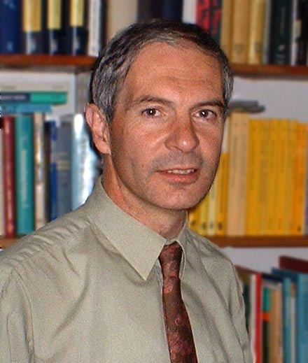

|
|
Kenneth J. Falconer | University of St Andrews Kenneth Falconer is a mathematician who specialises in Fractal Geometry and related topics. He is Regius Professor of Mathematics at the University of St Andrews and a member of the Analysis Research Group of the School of Mathematics and Statistics. He was an undergraduate (graduating as a Wrangler), research student and Research Fellow at Corpus Christi College, Cambridge. He became a Lecturer and then a Reader at the University of Bristol before being appointed Professor at St Andrews in 1993. He was appointed Regius Professor of Mathematics in 2017. He was elected a Fellow of the Royal Society of Edinburgh in 1998 and was awarded the Shephard Prize of the London Mathematical Society in 2020. Kenneth's main research interests are in fractal and multifractal geometry, geometric measure theory and related areas. His wide-ranging research has involved the description, occurrence, geometrical properties and dimensional analysis of fractal sets and measures. For example, his work on projections of fractals led to the concept of the digital sundial (a set with essentially any desired projections in all directions). He has derived formulae for the dimensions of specific types of fractals and multifractals, notably introducing the `affinity dimension' and its relatives for analysis of self-affine sets and measures and non-conformal repellers in dynamical systems. He introduced the distance problem. He has worked on dimensional and topological properties of random fractals and multifractals, including fractal percolation problems, partial differential equations on fractal domains, and fractal processes displaying forms of statistical self-similarity. His other research interests also have a geometric flavour, including the geometry of convex sets, combinatorial geometry and the mathematics of X-ray tomography. He has published over 130 papers in mathematics journals. He has written five books Fractal Geometry - Mathematical Foundations and Applications (with Solutions Manual 2nd Ed. Solutions Manual 3rd Ed.), Techniques in Fractal Geometry and The Geometry of Fractal Sets treat many mathematical aspects of fractal geometry. His recent book, Fractals - A Very Short Introduction, presents the ideas of fratals at a very basic level. The book, Unsolved Problems in Geometry, written with Hallard Croft and Richard Guy, surveys problems that are intuitively easy to understand but were unsolved at the time of writing, though many of the problems have since been solved. In 2000 he gave the London Mathematical Society annual Popular Lecture Fractals - the New Geometry, which is available on a DVD. Kenneth has spoken at many major international conferences on fractal geometry and analysis. He was Principal Organiser of the four month Programme on Fractal Mathematics and Applications at the Isaac Newton Institute in Cambridge from January to April 1999, and Co-organiser of a Programme on Fractals and Dynamics at the Mittag-Leffler Institute near Stockholm from September to December 2017. He was Chair of the British Mathematical Colloquium 2018 held in St Andrews. He has been a Visiting Professor at a number of universities including Oregon State University and the Australian National University, Canberra, as well as at the Isaac Newton Institute on several occasions.
He was a member of the Council of the London Mathematical Society for 9 years and was their Publications Secretary from 2006-09. He has also has served on the General Committee of the Edinburgh Mathematical Society. He is on the Editorial Boards of Fractals, Journal of Fractal Geometry, and Mathematical Proceedings of the Cambridge Philosophical Society. Kenneth's main leisure activity is long distance walking and hillwalking. He has twice climbed all the Munros (Scottish hills over 3000ft), as well as all the Corbetts (2500-2999ft). He is an active member of the Long Distance Walkers Association, and was Chairman from 2000-03 and Editor of their magazine Strider from 1987-92, 2007-12 and 2022-23; in 2021 he became Vice-President. He has completed 36 of the LDWA's annual hundred mile continuous cross-country walks in times around from 26 to 34 hours. He is a Centurion and a member of the Marilyn Hall of Fame. Kenneth Falconer
Telephone: 01334 476161 Ext. 3733
email: kjf@st-andrews.ac.uk
|
|